Case study 1 · SrotaBio
SrotaBio is a 0→1 women's health startup building end-to-end care for PCOS/PMOS in India: doctor-led diagnosis and care plans, lab tests, health coaching, medicines, and a care manager who stays with each patient throughout.
I joined as a product and research consultant while the company was still pre-launch.
The care team every patient moves between
The problem
SrotaBio had a care idea, but no care model yet. The next step was to map the whole patient journey as a care SOP: what happens at each step, who does it, and what information gets passed on, so nothing gets lost between the people involved.
Building the tool to run it was the other risk: too little and the operations fall apart within a few patients, too much and we spend months of engineering before a single patient tells us what they actually need.
How I approached it
Five stages, each building on the last: from mapping the service, to working through it with the doctor, to requirements, a prototype and a pilot.
| Objective | What I found | What I delivered |
|---|---|---|
| Map the whole service end to end, from a patient's first enquiry to follow-upsMarket research, online competitor analysis, and going through a competitor's onboarding myself |
|
Patient journey SOP in three phases, with a flowchart for each, and a list of the documents and comms needed at every step 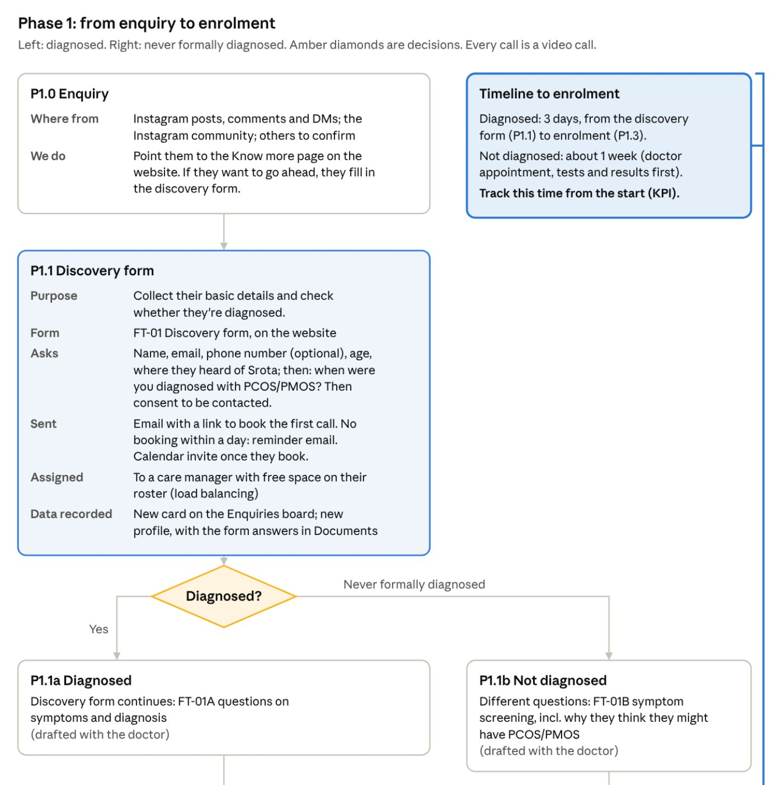 The start of Phase 1. Click to enlarge |
| Refine the SOP with the Chief Medical Advisor and the founderWorking sessions with the Chief Medical Advisor and the founder |
|
Two routes into the programme: diagnosed patients enrol after the first call; others get a paid doctor visit and tests firstA care team meeting before every care plan appointment |
| Turn the SOP into a PRD for an internal case management toolSection-by-section reviews with the founder |
|
A journey-led PRD for the care manager, in 14 steps: trigger, action and outcome for each patient group, plus documents, messages, automation and open questions 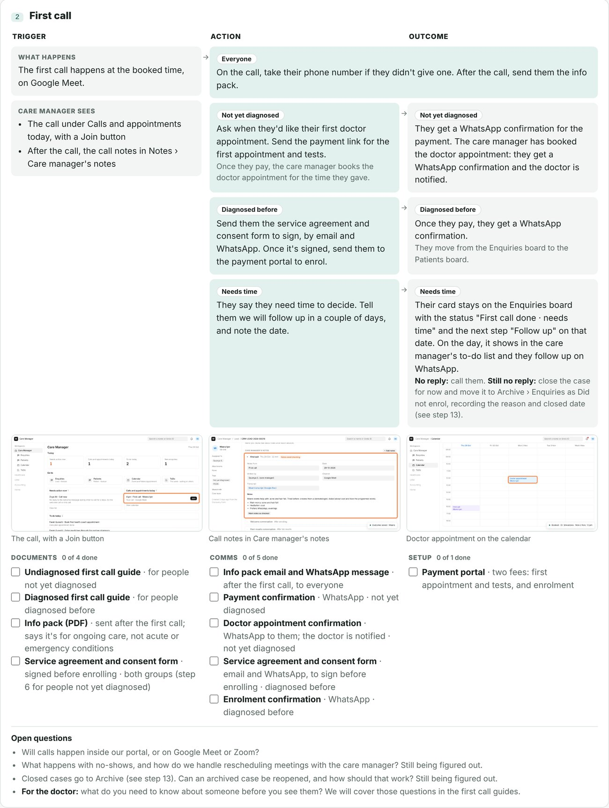 Step 2 of 14, the first call. Click to enlarge |
| Prototype the case management tool and the doctor's side of the tool within what Marley Health supports, so it could be built as designed |
|
Case management tool prototype, handed to engineeringDoctor-side PRD and prototype 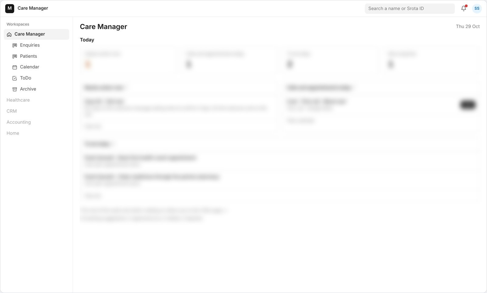 The care manager's home page. Click to enlarge |
| Happening nowTest the journey with 5–10 real patients before investing heavily in engineeringA scrappy MVP of the tool for the pilot, built on Google Apps Script |
|
A pilot board on Google Apps Script: patients by stage, a form after every first call, calendar reminders and a daily email of what's due |
Impact
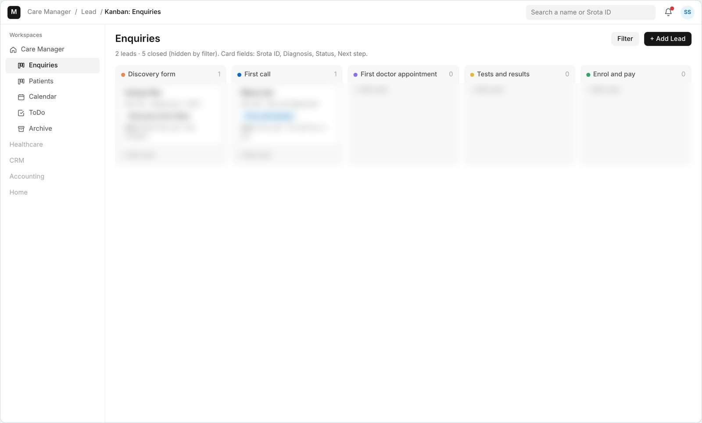
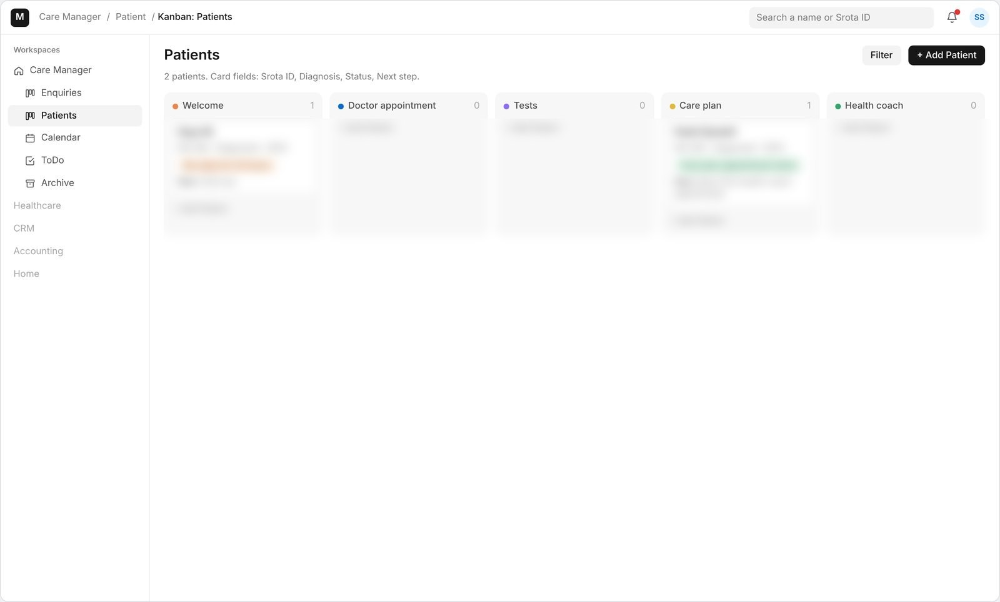
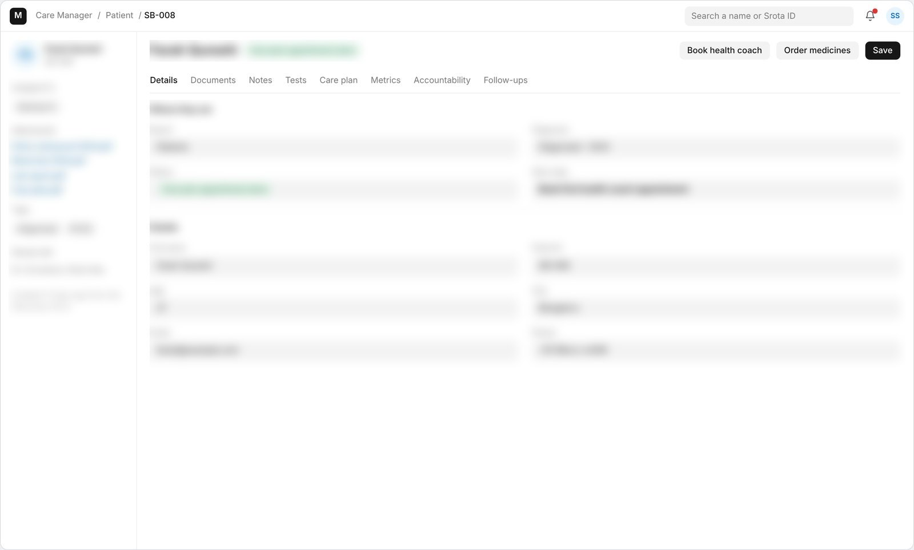
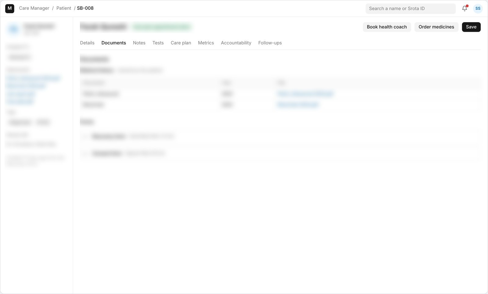
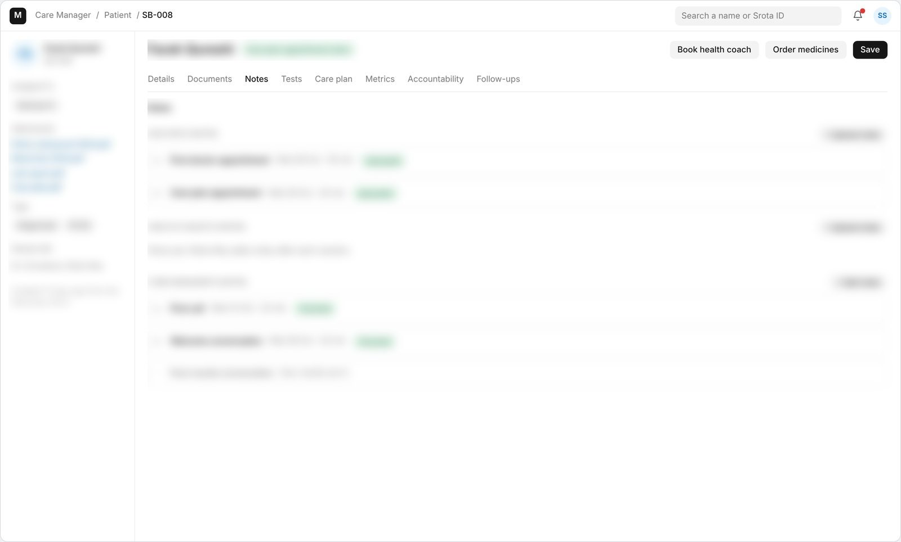
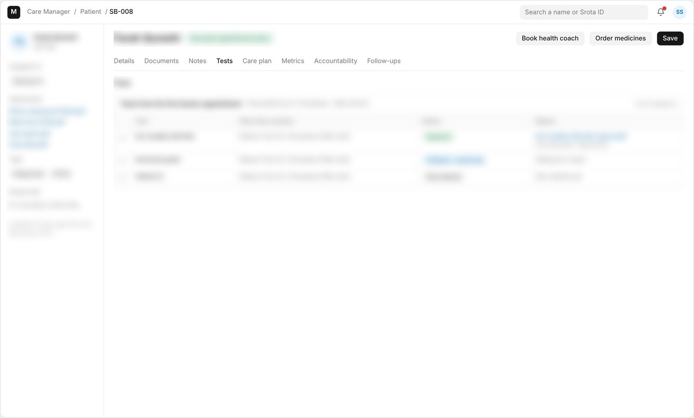
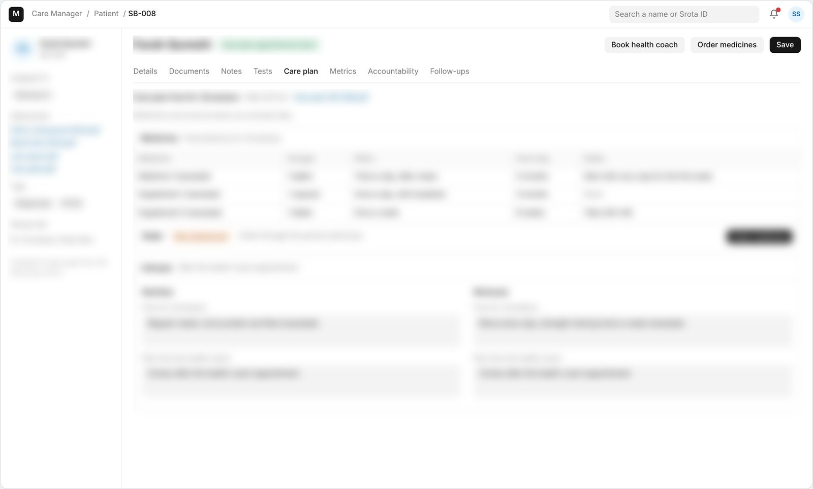
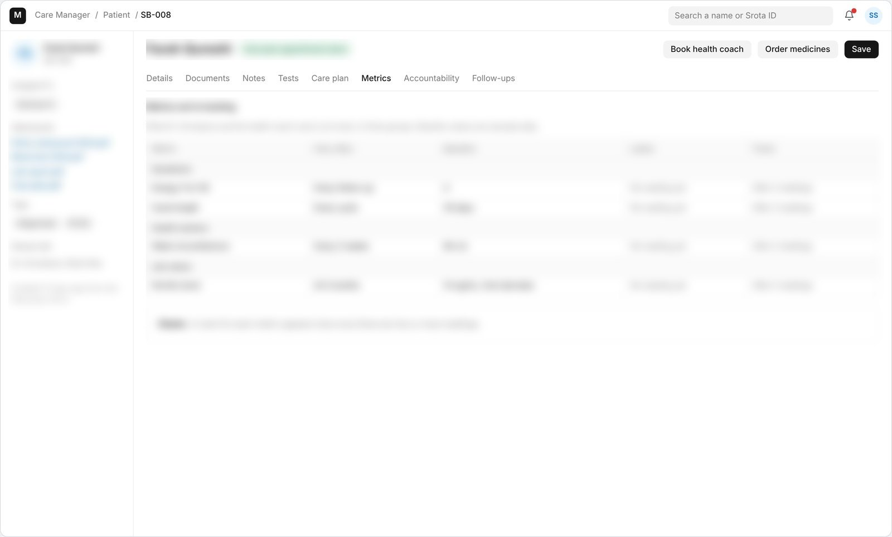
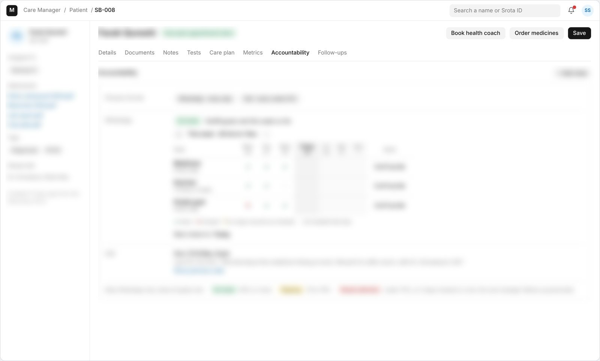
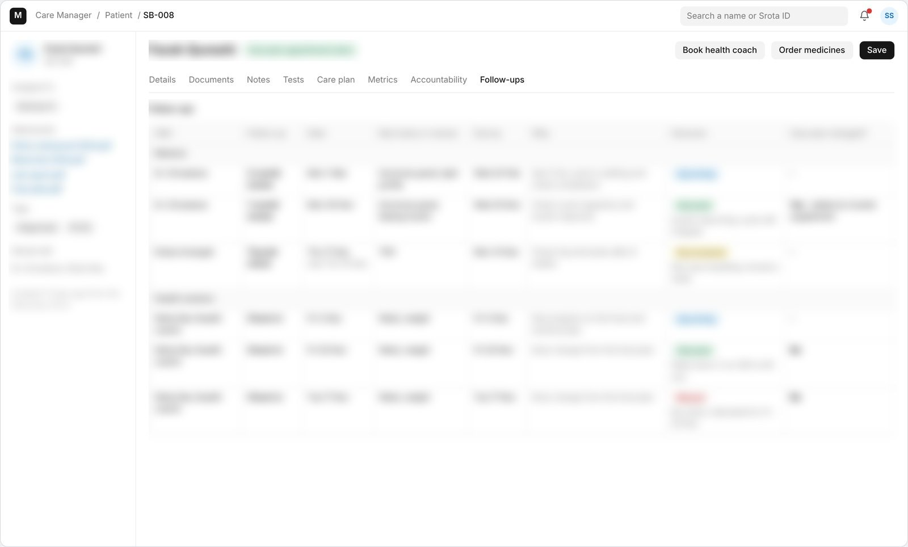
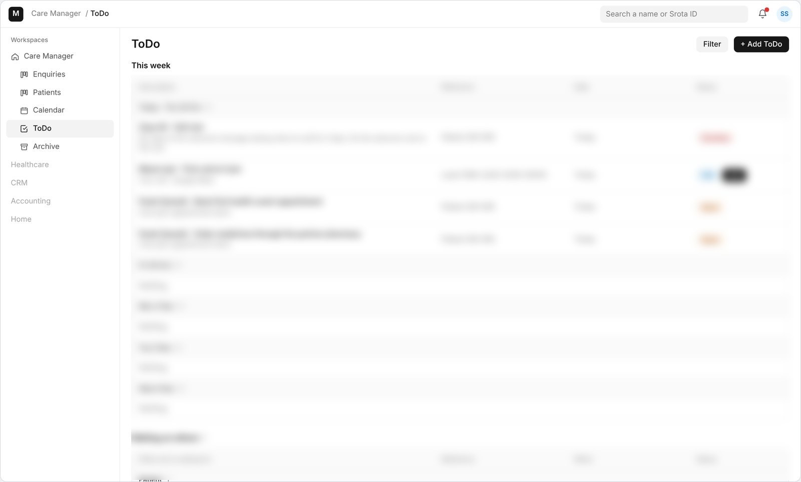
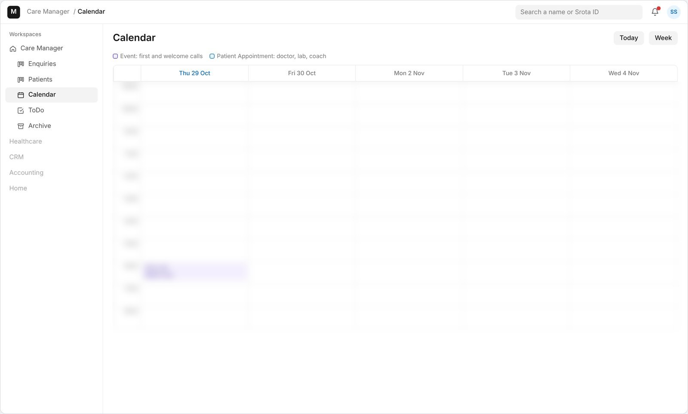
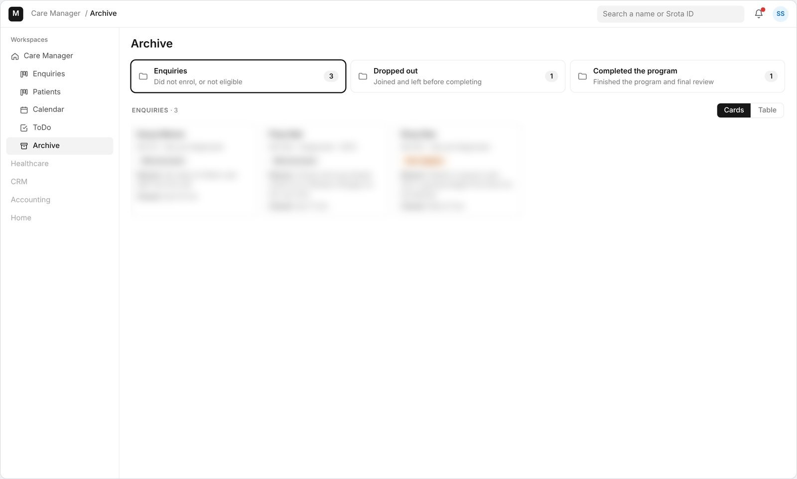
1 / 14 · Screens from the case management tool, with details blurred because of an NDA
Reflection: knowing when to be scrappy
After designing the full system, stepping back to test the whole journey by hand with a small pilot, before building it, was the right call. What we build next will come from real patients, not assumptions.
I also found how much I love designing service experiences: using my research background to go from understanding people to shaping the care they actually get.